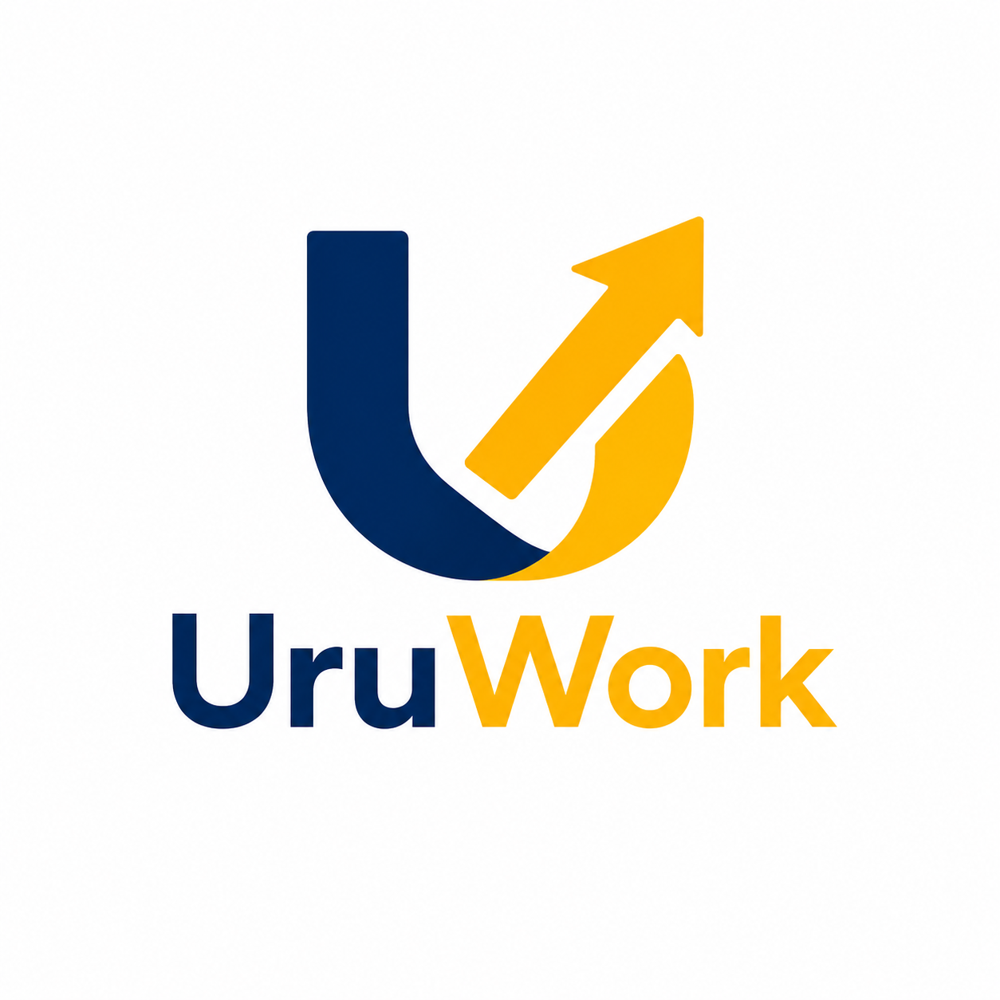

Quienes somos
Somos una comunidad laboral uruguaya enfocada en difundir oportunidades de forma simple, cercana y accesible para todas las personas.

Comunidad laboral de Uruguay
Una nueva identidad para seguir conectando personas, empresas y oportunidades laborales reales en todo Uruguay.
Antes BTU, ahora UruWork
UruWork nace como una nueva etapa de un proyecto que comenzo con BTU (Busco Trabajo Uruguay), una comunidad creada para acercar oportunidades laborales a quienes buscan trabajo y facilitar a las empresas la difusion de sus busquedas.
Somos una comunidad laboral uruguaya enfocada en difundir oportunidades de forma simple, cercana y accesible para todas las personas.
Venimos de BTU, una iniciativa que crecio desde redes sociales, WhatsApp y Facebook, conectando avisos laborales con una comunidad activa.
UruWork busca consolidarse como una marca mas amplia, profesional y reconocible para empleo, comunidad y oportunidades en Uruguay.
Que hacemos
Acercamos oportunidades laborales y avisos de empleo faciles de consultar.
Ayudamos a difundir busquedas laborales frente a una comunidad interesada.
Construimos canales de comunicacion para que la informacion llegue rapido.
Contacto
Estamos preparando esta nueva identidad. Mientras tanto, la comunidad sigue activa y en crecimiento.